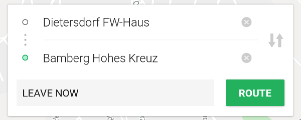
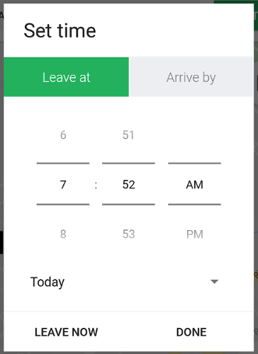
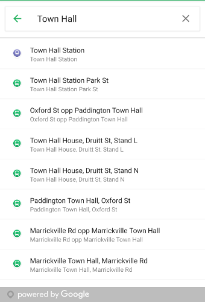

Most of the time, you'll be interested in things involving Locations - a starting location, a destination location, or possibly a service stop location. We provide a few components to help you find them.
RouteInputView

The RouteInputView is a view that can be overlaid on top of a map, such as the TripKit Map Fragment,
providing a UI for displaying the origin and destination locations, as well as departure/arrival time.
The RouteInputView doesn't provide any logic, it's simply there to display information and pass along click events.
You'll need to keep track of the chosen Locations yourself by adding an OnRouteWidgetClickedListener.
<FrameLayout android:layout_width="match_parent"
android:layout_height="match_parent">
<fragment android:layout_width="match_parent"
android:layout_height="match_parent"
android:id="@+id/map"
android:name="com.skedgo.tripkit.ui.map.home.TripKitMapFragment"/>
<com.skedgo.tripkit.ui.routeinput.RouteInputView
android:id="@+id/routeInputView"
android:layout_height="wrap_content"
android:layout_gravity="center_horizontal|top"
android:layout_marginTop="16dp"
android:layout_marginStart="16dp"
android:layout_marginEnd="16dp"
android:layout_width="match_parent"/>
</FrameLayout> private var fromLocation: Location? = null
private var toLocation: Location? = null
override fun onCreate(savedInstanceState: Bundle?) {
super.onCreate(savedInstanceState)
routeInputView.setOnRouteWidgetClickedListener { widget ->
when(widget) {
RouteInputView.OnRouteWidgetClickedListener.Widget.START -> showSearchForStart()
RouteInputView.OnRouteWidgetClickedListener.Widget.DESTINATION -> showSearchForDestination()
RouteInputView.OnRouteWidgetClickedListener.Widget.SWAPPED -> startAndDestinationSwapped()
RouteInputView.OnRouteWidgetClickedListener.Widget.ROUTE ->routeButtonSelected()
RouteInputView.OnRouteWidgetClickedListener.Widget.TIME -> timeButtonSelected()
}
}The widgetClicked
function of your OnRouteWidgetClickedListener will give you an enum value of the widget that was
clicked.
When the user clicks on the start or destination fields, you could launch a LocationSearchFragment to allow them to search for a location. When they click on the time button, you can show them a TripKitDateTimePickerDialogFragment to set their departure or arrival time, and when they click on the Route button, you could load the TripResultListFragment.
TripKitDateTimePickerDialogFragment

The TripKitTimeDatePickerDialogFragment displays a date and time picker so the user can choose their departure or arrival time.
Use the TripKitDateTimePickerDialogFragment.Builder to build your fragment fluently. If you know the start and
destination locations, you can pass that using withLocations to automatically handle timezone issues.
To configure the initial values, you can either use withTimeTag to give the fragment a TimeTag, or you can use
withTimeType and timeMillis.
The OnTimeSelectedListener will return a TimeTag after the user has finalized their choice.
var fragment = TripKitDateTimePickerDialogFragment.Builder()
.withLocations(toLocation, fromLocation)
.withTimeTag(timeTagForQuery)
.build()
fragment.setOnTimeSelectedListener { tag ->
// Show the correct time on the RouteInputView button when they've changed the time
val timeZone: String? = when (tag.type) {
TIME_TYPE_LEAVE_AFTER -> { toLocation?.timeZone }
TIME_TYPE_ARRIVE_BY -> { fromLocation?.timeZone }
else -> null
}
routeInputView.setTimeButton(tag.formatString(this, timeZone))
}
fragment.show(supportFragmentManager, "timePicker")
LocationSearchFragment
The LocationSearchFragment is a self-contained location search component which merges search results from both SkedGo's
search results as well as Google Places.

LocationSearchFragment.Builder()
.withBounds(mMap.projection.visibleRegion.latLngBounds)
.near(mMap.cameraPosition.target)
.withHint(getString(R.string.search))
.allowCurrentLocation(true)
.allowDropPin()
.build()You can style the individual results by changing a few values.
dimens.xml
| Name | Description |
|---|---|
| tripkit_search_result_icon_size | Sets the size of the result icon. The default is 24dp. |
| tripkit_search_result_divider_inset | Sets the inset of the dividing line between items. The default is 0dp. |
styles.xml
| Name | Description |
|---|---|
| tripkit_search_result_title | Sets the style of the result title. |
| tripkit_search_result_subtitle | Sets the style of the result subtitle. |
The LocationSearchFragment.Builder() can be configured with a few different settings.
| Function | Description |
|---|---|
| withBounds(LatLngBounds) | Used for Google Places searches. In our example, we use the map's visible boundaries. |
| near(LatLng) | Used for TripGo searches. In our example, we focus on the center of the map. |
| withHint(String) | Sets the EditText's hint. |
| initialQuery(String) | Set a query. |
| allowCurrentLocation(Boolean) | When true, show a permanent option for "Current Location" at the top of the results list |
| allowDropPin(Boolean) | When true, show a permanent option for "Choose on Map" at the top of the results list |